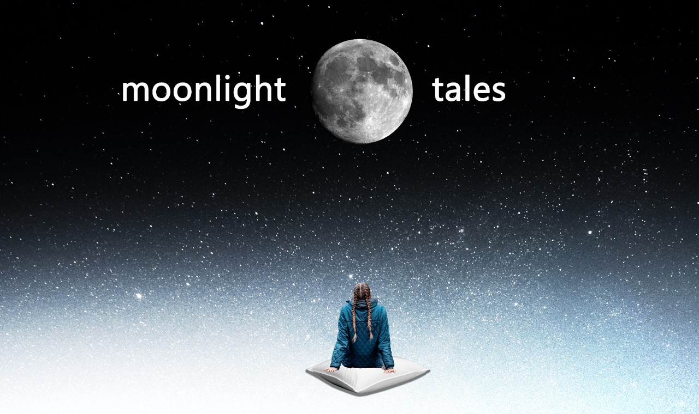

Moonlight Tales- A Future Cyber-Physical Storyteller

Introduction
This is an imagined future storytelling CPS by me and my teammate Teffera, where cushions and humans are the central part of it. The title "Moonlight Tales" was gotten from the traditional African storytelling culture where stories and history are passed down in a family or community for generations. It usually involves the adults gathering children together to tell them stories in the night - under the moonlight. This is popularly known as
Tales by Moonlight. Interestingly, even though there are variations, this culture is ubiquitous. In trying to build a technology that brings people together, we also wanted it to be something that everyone can relate with; this is how the Moonlight Tales was invented.
The Placard
- Title: Moonlight Tales
- Artists: Memunat Ibrahim & Teffera G. Teffera
- Materials: foam, canvas, fibre optic sensors, accelerometer, wifi/bluetooth/sound recording enabled circuit board or microcontroller, controller program, display screen, data storage and cloud server
- Year: 2020
- First part: Moonlight tales is a storytelling system made of a network of cyber-physical cushions. The system captures real-time data about its physical environment through its embedded sensors and delivers custom storytelling experiences to its audience using machine learning algorithms. The system design is focused on in-person social interactions and physical responses.
- Second part: Turning cushions into a CPS requires various stories and real-time audience (humans) and environment data to be collected via local sensors which is transferred through the microcontroller via the internet to the machine learning server for processing (determine when to tell stories, what story to tell, and what story audience enjoy). The machine learning algorithms and data processors translate real-time audience interactions and physical responses into inputs for the interactive storytelling device.The result of the process will be sent to the controller program to get the selected story and send it to the screen; the controller will also oversee tweeting (to invite or praise audience) and entertaining the audience (till a reasonable number of people arrive for it to tell a story). Communication and exchange of data between the component will be done over the internet. The audience is essential to this system being a cyber-physical one. There will be no feedback loop between the physical and digital world in their absence. They produce the data needed to activate and advance the experience, this data influence what story is told, which in turn influence their reactions and satisfaction level. The stories are updated regualrly with by human stories curators.
- Final paragraph: We hope that, primarily, the product provides a basis for understanding the role of CPS in strengthening real-time interactions and increasing socio-cultural value in shared public spaces. We also raise questions around cultural density and what it means to provide evenly distributed opportunities for cultural exchange.
Nonetheless, while we opted for what we considered to be a voluntary communal experience, it is possible that this CPS, which captures sensitive data, can:
- Compromise individual data if users are identified
- Be weaponized as a harrassment tool if hacked
- Be used in maladroit ways as it relates to labor
System Design Agenda
We want to raise questions around existing technologies and their abilities to connect us in meaningful ways. Technologies have been designed to connect us, but they also result in disconnections, promoting individuality and isolation; this trend does not appear to be changing anytime soon. Can we design a system that incentivises people to come together and be entertained? A system that aims to revive or compliment the benefits of physical proximity, based on ideas of togetherness, and reintroduces what we perceive to be fading cultural values. We already have a long-term global culture of coming together in physical spaces to listen to stories, how do we build technologies that excites us to continue doing this?
Also, we know that collecting audience heartbeat data will raise a lot of questions for the audience and we wanted to see what questions they would ask when they know their heart rate is monitored. We thought this might be a starting point for them to question other smart systems that collect their data while serving them.
Questions We Hope It Inspire In Our Audience?
- What data is collected from them to make this experience work?
- Why is the heartbeat data collected?
- What will it be used for after they had engaged with the system? What happens to the data?
- Does it collect identifying data about them for identification?
- Can smart technologies inspire us to share meaningful and tactile experiences in public spaces? In private ones? Across distances?
- Have we lost some of our abilities to connect in public spaces? To be present?
- What does an enhanced digital/virtual social experience look like?
The Journey
It was a very interesting journey. We started by looking at cushions and where they are often used. We found that this list could be very extensive in that it relates to a lot of resting “devices.” We considered pillows, vehicle seats (small and large), wheelchairs, chairs and sofas etc. We ultimately decided that what we would consider a cushion to be an item that would be a layer for seating. We then dove right into technological considerations- What is the state of the art, embedded technology in this cushion industry? What does it seek to solve? What kind of sensors, data, and networking capabilities does it have? This uncovered a range of products, most of which focused on the healthcare industry. We came across a crowd funded consumer product, “Darma”, which seeks/claims to use optic fibres that use light to monitor heartbeats, posture, respiration, and stress levels and communicate to the user via a mobile app.
Looking back at my experience with the AI enabled toilet seat also hinted at potential security/identification capabilities (“anus prints” for biometrics...yes.) As we continued this dive into existing capabilities, we realized that one way we could start to think beyond the item was to look at the social and cultural context of cushions, or rather sitting. This turned out to be a very useful framework as it changed the focus from device to the human need. We asked: beyond the somewhat physical needs of resting, what are historical social and cultural practices related to sitting? This is when our idea to use cushions as communal gathering and storytelling devices came to us. We both shared knowledge of such experiences, from stories under the moonlight in African villages to campfire tales in remote areas of the world (confirmed when the search keywords “cavemen sitting” produced an abundant number of images visualizing them sitting around a fire.)
After presenting the first draft to the class, the feedback from the cohort made us we realise our prototype is missing some details about how the system functions and how the components interact with each other to create the experience; we also needed to make the fact that our data is not collecting identifying data about the users. We worked on that by rearranging the components in the requirements map to be clearer and show the flow of data and signals as seen in the images below. We also made explicit the data we are collecting – the heartbeat and motion data – to make it clear that no identifying data of the audience is collected by the system.
System Requirements
For us to upgrade a set of cushions and a display screen into a CPS, the following are required:
- Sensors - fibre optic sensors, sound sensor, motion sensor - to collect data from its physical environment and humans
- Data- heartbeat via respiration, audio recording, motion, stories, speech
- Internet of Things (IoT) – a network of physical objects (cushions) - that are embedded with sensors, software, and other technologies connected over the internet.
- Data storage - where the collected data, signals, and processed data are stored.
- Machine learning cloud server – to analyse and make sense of the data at scale.
- Data analytics and machine learning algorithms - to make sense of the collected data, we need machine learning algorithms that can use audience physical data like heartbeats, motion, and sound to modify their delivery of stories and audio-visual experiences in real-time; including speech recognition algorithms.
- Controller program or software – to control the system’s operations. It receives data collected by the sensor and instructs the actuators accordingly.
- Microcontroller - like Arduino - to connect the physical components like the sensors and the screen to the internet.
- Actuators - storytelling devices (advanced = an audio-visual electronic/holographic display OR minimum viable experience = audio speakers) – acts on the system’s physical environment as instructed by the controller.
- Network – Internet, Wi-Fi module, Bluetooth module - connects the system’s components (hardware and software) to one another and to external systems (like Twitter).
- Humans – The system is a human-centric one; humans are needed in the system for there to be feedback loop between the physical and digital world. Humans create the signals or data the sensors capture, and the screen tries to tell stories to humans.
For the system to scale, in addition to the aforementioned components, we will need:
- Electricity supply
- Internet connection
- Business analysts, market researchers, anthropologists, etc – to help us understand the users, their needs, feasibility studies; and to help in defining and designing the system
- Storytelling experts, media and entertainment experts, and stories curators (crowdsourcing with curative layer possible)
- Machine learning engineers
- Data security and privacy experts
- A knowledge of the ethics protocols required to building this system for the public.
- Collaboration and permission of the authorities of the public places
- Installation Engineers.
- Language interpreter – to tell a story to diverse audience in their preferred language
What Informed Our Futuristic Cushion Design?
- Culture – we looked into at cushions and where they are often used, then decided to work on it as a seating object.
- Trend – we researched trend in technological advancements relating to seating (especially in cushions) by reading and watching videos on existing and proposed scientific researches.
- Feasibility – what is needed to build this? we investigated existing smart cushions to see if the technologies required to build the system is in existence and in determining some of the required components
Having captured quite a few tech capabilities related to enhanced/smart cushions early on we did a bit more research around storytelling and public installations that seek to create interactive experiences in different public spaces. This was informative both in terms of viability, but also expected outcome. Most of the following work was done based on this installation being placed somewhere in a public facing part of an airport, but we have since expanded/scaled it to cover many more public and private spaces (as a result of tutorial class discussions.)
As we revised our initial design of the system, we raised and discussed the questions and potential resolutions around –
- Trend – we researched trend in technological advancements relating to seating by reading and watching videos on existing and proposed scientific researches.
- Feasibility – what is needed to build this? we looked into existing smart cushions to see if the technologies required to build the system is in existence.
- Scalability – where could it be deployed? What audience could it be addressing?
- Inclusiveness - how do we make it communicate to diverse audience irrespective of their languages?
- Accessibility – what happens when there’s no good internet connection or electricity?
- Robustness – how does it react to environmental changes – people arriving or leaving? Interactivity - How does it engage with the audience and make them know their presence is felt? How do we make it more fun and engaging? Should it randomly invite an audience member to be the storyteller? Should it involve the audience in some game to enable them to interact and connect with one another? Should it tweet to express itself to larger audience?
- Redefining “space” and “presence” - considering our experiences during COVID-19 and how our definition of “presence” and “space” have altered, how does this system operate in different space? Do we make it only function when people are present and together physically? Can we design it such that people in different locations can be present virtually and still experience what it will have been like to be together physically?
How We Gathered The Requirements
Considering the time limit, we couldn’t carry out systems analysis and feasibility study as we would have loved to. We gathered requirements by looking into our backgrounds and experiences, historical and current social activities, policies on privacy and data collection, and looking at tech trends. The process was driven by questions on “smart cushions” capabilities, what can the existing smart cushions do? What was embedded into cushions to make them smart? What is the purpose of our system? Where do we see it being deployed? How do we make cushions detect human presence? If we are to use a sensor that detects if an object is on the cushion, what if people try to “play” the system by placing bags or objects on other connected cushions? How will it detect human presence by detecting heartbeats? How does it receive data from its environment? How does it send reaction to its environment? How does it adjust to changes in its environment? How will it influence its environment and be influenced by its environment? How does it evolve over time? How do we ensure it is not repurposed to collect private health data?
References
- Copeland, S & de Moor, A 2018, “Community Digital Storytelling for Collective Intelligence: towards a Storytelling Cycle of Trust” AI and Society, vol. 33, no. 1, pp. 101–111, doi: 10.1007/s00146-017-0744-1.
- Deepu, CJ, Chen, Z, Teo, JT, Ng, SH, Yang, X, & Lian, Y 2012, “A smart cushion for real-time heart rate monitoring” in 2012 IEEE Biomedical Circuits and Systems Conference: Intelligent Biomedical Electronics and Systems for Better Life and Better Environment, BioCAS 2012 - Conference Publications, pp. 53–56, doi: 10.1109/BioCAS.2012.6418512.
- Keränen, K, Mäkinen, JT, Korhonen, P, Juntunen, E, Heikkinen, V, & Mäkelä, J 2010, “Infrared temperature sensor system for mobile devices” Sensors and Actuators, A: Physical, vol. 158, no. 1, pp. 161–167, doi: 10.1016/j.sna.2009.12.023.
- Miller, S & Pennycuff, L 2008, The Power of Story: Using Storytelling to Improve Literacy Learning Journal of Cross-Disciplinary Perspectives in Education, vol. 1.
- Yhuwana, YGY, Apsari, R, & Yasin, M 2017, “Fiber optic sensor for heart rate detection” Optik, vol. 134, pp. 28–32, doi: 10.1016/j.ijleo.2017.01.035.
- Young, C & MacDougall, D 2019, Portable Stroke Diagnosis Devices for Adults with Stroke Symptoms: A Review of Diagnostic Accuracy and Cost-Effectiveness Portable Stroke Diagnosis Devices for Adults with Stroke Symptoms: A Review of Diagnostic Accuracy and Cost-Effectiveness, Canadian Agency for Drugs and Technologies in Health, Retrieved from http://www.ncbi.nlm.nih.gov/pubmed/31536181.
- “The Day I Measured My Heart Rate Through My Butt | TechCrunch” n.d., viewed May 25, 2020, https://techcrunch.com/2014/06/19/darma-seat-cushion/.
- “61 Exciting Things You Can Do With the Apple Watch” n.d., viewed May 25, 2020, https://www.gottabemobile.com/things-apple-watch-can-do/.
- “Common Spine Problems Explained With Pictures” n.d., viewed May 25, 2020, https://www.webmd.com/back-pain/ss/slideshow-spine-problems.
- “Cushions - Physiopedia” n.d., viewed May 25, 2020, https://www.physio-pedia.com/Cushions.
- “Engineers unleash car-seat identifier that reads your rear end” n.d., viewed May 25, 2020, https://phys.org/news/2011-12-unleash-car-seat-rear.html.
- “Why Scientists Created a ‘Smart Toilet’ That Recognizes Your Butt | Smart News | Smithsonian Magazine” n.d., viewed May 25, 2020, https://www.smithsonianmag.com/smart-news/why-scientists-created-smart-toilet-recognizes-your-bum-180974641/.